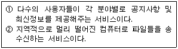
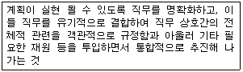

사무자동화산업기사 (2010-05-09 기출문제)
1과목: 사무자동화 시스템
1. 등각속도(CAV)방식의 특징이 아닌 것은?
- 디스크 저장 공간이 비효율적으로 사용된다.
- 디스크 평판이 일정한 속도로 회전한다.
- 회전 구동장치가 간단하다.
- 모든 트랙의 저장밀도가 같다.
(정답률: 56%)

2. 사무자동화 추진과 관련하여 시스템과학을 적용하는데 있어서 갖춰야 할 특징으로 잘못된 것은?
- 고정된 작업공정에 적용
- 반환(feedback) 기능
- 입력과 출력의 분석
- 목적ㆍ목표의 계속적 추구
(정답률: 59%)
3. 기억장치의 접근속도가 0.5㎲이고, 데이터 워드가 32비트 일 때 대역폭은?
- 8M[bit/sec]
- 16M[bit/sec]
- 32M[bit/sec]
- 64M[bit/sec]
(정답률: 59%)
4. 다음 ①, ②의 설명과 관련 있는 인터넷 서비스는?

- ① FTP ② 유즈넷
- ① 유즈넷 ② FTP
- ① 유즈넷 ② 텔넷
- ① FTP ② 전자우편
(정답률: 84%)
5. 파일링시스템 도입의 효과라고 할 수 없는 것은?
- 문서관리의 명확화를 기할 수 있다.
- 개인소유 문서를 그룹단위로 보관함에 따라 중복문서가 많아진다.
- 보존, 보관, 폐기를 정기적으로 실시함에 따라 업무상 필요한 기록의 보전, 추구가 용이하다.
- 공용 파일에 대하여 개인 물건화를 방지한다.
(정답률: 68%)
6. 일반적으로 컴퓨터를 사용해 전화 통화를 관리하는 CTI application 들이 제공하는 기능으로 틀린 것은?
- 인증이나 메시지 전달을 위한 음성인식
- 송화자에게 대화식 음성 응답을 제공
- 대기 중인 통화 또는 송화자가 남긴 메시지를 수집하여 보여줌
- 텔레마케팅과 같은 외부 통화 제한을 위한 잠금 기능
(정답률: 83%)
7. OA 목표설정 방법 중 시간에 따른 목표설정이 틀린 것은?
- 단기목표 - 1년에서 2년 이내 실행이 가능한 목표
- 중기목표 - 4년에서 5년 사이에 실행이 가능한 목표
- 장기목표 - 10년이내 실행이 가능한 목표
- 중장기목표 - 4년에서 5년 사이에 실행이 가능한 목표
(정답률: 86%)
8. 기억용량을 나타내는 단위로 바이트(byte)를 사용한다. 단위 관계가 옳은 것은?
- 1KByte = 1024bit
- 1MByte = 1024KByte
- 1Byte = 1024KByte
- 1GByte = 1024KByte
(정답률: 80%)
9. 일반적인 화상정보(2차원정보)를 입력하는 방법으로 적당하지 않은 것은?
- 타블렛(디지타이저) 등을 이용하여 도형요소를 하나씩 입력한다.
- 동화상의 입력에 비디오카메라를 사용할 수 있다.
- 스캐너를 이용하여 도면 등을 입력할 수 있다.
- 패턴인식기술을 이용한 OCR로 입력한다.
(정답률: 51%)
10. 다음 중 표준 디스플레이 해상도가 가장 높은 것은?
- CGA
- XGA
- EGA
- VGA
(정답률: 83%)
11. 데이터베이스(database)의 목적과 가장 거리가 먼 것은?
- 데이터의 무결성
- 데이터의 중복성
- 데이터의 공유
- 데이터의 독립성
(정답률: 62%)
12. 맨머신 인터페이스에 대한 설명으로 옳지 않은 것은?
- 인간이 기계를 조작하거나 이용하는 부분으로 상호 간의 의사전달이 이루어진다.
- 인간이 기계를 이용할 때 인간과 기계 사이의 연결부분이다.
- LAN, 저장 및 처리 기술로 이루어진다.
- 입력, 출력 및 이들 기기의 이용 소프트웨어 등의 기술로 이루어진다.
(정답률: 76%)
13. 사무자동화(OA)의 접근방법의 유형에 속하지 않는 것은?
- 부분 전개 접근방법
- 업무별 접근방법
- 사원별 접근방법
- 계층별 접근방법
(정답률: 65%)
14. 사무자동화(OA)의 기대효과라고 볼 수 없는 것은?
- 투자효율성 증가
- 생산성의 개선
- 조직의 최적화
- 경쟁력의 증대
(정답률: 60%)
15. 사무자동화의 환경 개선이 주는 효과가 아닌 것은?
- 사무기기의 고장 시간의 감소
- 정확성 및 생산성의 증가
- 권태감 등의 감소로 작업자의 사기 앙양
- 사무자동화 기기 위주의 배려로 작업 능률 향상
(정답률: 67%)
16. 애니메이션 기법에서 한 이미지에서 다른 이미지로 변형시키는 기술은?
- Morphing
- Warping
- Modeling
- Rendering
(정답률: 61%)
17. 보조기억장치를 이용하여 여러 개의 프로그램에 대하여 입력과 CPU 작업을 중첩시켜 처리할 수 있게 하는 방식은?
- spooling
- buffering
- cashing
- mapping
(정답률: 75%)
18. 웹 문서의 전반적인 스타일을 미리 저장해 둔 스타일시트로 문서 전체의 일관성을 유지할 수 있고, 세세한 스타일 지정의 필요를 줄어들게 한 것은?
- CSS
- SAX
- DSS
- DTD
(정답률: 44%)
19. 중앙처리장치에서 사용되는 레지스터의 종류가 아닌 것은?
- accumulator
- program counter
- instruction register
- full adder
(정답률: 61%)
20. 통신판매중개자가 자신의 정보처리시스템을 통하여 처리한 기록 중 소비자불만에 관한 기록의 보존 기준은?
- 6월
- 1년
- 3년
- 5년
(정답률: 59%)
2과목: 사무경영관리 개론
21. EDI의 발생 배경이 아닌 것은?
- 전산관련 업무를 맡은 유능한 인재들의 활용
- 정보통신 기술의 발전 및 활용 가능성 인식
- 대량의 업무처리에 대한 신속성 요구 증대
- 외부 정보에의 의존 증대
(정답률: 65%)
22. 산업보건기준에 관한 규칙에 의거 소음의 작업측정 결과 청력보존프로그램을 수립, 시행해야 할 기준으로 옳은 것은?
- 소음수준이 50데시벨을 초과하는 사업장
- 소음수준이 70데시벨을 초과하는 사업장
- 소음수준이 90데시벨을 초과하는 사업장
- 소음수준이 100데시벨을 초과하는 사업장
(정답률: 55%)
23. 자동화의 체계 중 사무관리의 자동화가 아닌 것은?
- 물건 생산과 유통의 자동화
- 정보의 작성과 정보처리의 자동화
- 자금의 운용과 유통의 자동화
- 프로그램의 작성 자동화
(정답률: 51%)
24. 사무관리에 있어서 표준화의 목적과 가장 관계없는 것은?
- 사무종사자의 근로의욕을 높이고 능률을 증진시킬 수 있다.
- 사무에 대한 효과적인 감독 및 통제를 할 수 있다.
- 사무업무의 용어나 개념상의 통일을 기할 수 있다.
- 표준화된 내규로 사무종사자의 권한을 강화시킨다.
(정답률: 72%)
25. 중앙기록물관리기관의 장이 기록물의 체계적, 전문적 관리 및 효율적 활용을 위하여 표준을 제정, 시행해야 할 사항이 아닌 것은?
- 전자기록물의 관리체계
- 기록물관리 절차별 표준기능
- 기록물 종류별 관리기준
- 기록물 종류별 분류기준
(정답률: 44%)
26. 다음 중 정보관리의 기능과 가장 거리가 먼 것은?
- 정보의 계획
- 정보의 처리
- 정보의 조정
- 정보의 보관
(정답률: 43%)
27. 다음 중 사무관리의 원칙과 가장 관계없는 것은?
- 용이성
- 주관성
- 정확성
- 신속성
(정답률: 65%)
28. 컴퓨터 프로그램 저작물 등록부에 기재하여야 할 사항이 아닌 것은?
- 등록의 목적
- 저작물의 제호
- 등록권리자의 성명
- 등록의 내용
(정답률: 54%)
29. 사무간소화에 이용되는 동작연구와 시간연구의 기법과 거리가 먼 것은?
- 서식 절차 도표
- 기구 도표
- 작업 도표
- 서식 경략 도표
(정답률: 70%)
30. 길브레스 부부는 인간의 동작을 구성하는 기본적인 요소를 18가지의 미세동작으로 나누고 이 미세동작이 결합함으로써 작업이 수행된다고 보았으며, 이 18가지의 미세동작을 기호화하였는데 그 기호의 이름은?
- symbol
- code
- therblig
- mark
(정답률: 58%)
31. 영상표시단말기의 화면 성능이 제공할 내용으로 틀린 것은?
- 화면의 휘도비(CONTRAST)는 작업자가 용이하게 조절할 수 있을 것
- 영상표시단말기 화면은 회전 및 경사조절이 가능 할 것
- 화면의 회질은 항상 선명할 것
- 단색화면일 경우 색상은 일반적으로 어두운 배경에 청색 문자를 사용할 것
(정답률: 77%)
32. 데이터베이스 제작자의 권리 발생기준으로 옳은 것은?
- 데이터베이스의 제작을 완료한 때부터 발생
- 데이터베이스의 설계를 완료한 때부터 발생
- 데이터베이스의 제작을 공표한 때부터 발생
- 데이터베이스의 설계를 공표한 때부터 발생
(정답률: 48%)
33. 문서관리의 가장 바람직한 방안이 아닌 것은?
- 문서 담당자의 재량권을 최대한 인정하여 나름대로 판단할 수 있는 요소를 증가시키도록 해야 한다.
- 문서의 처리를 빠르게 할 수 있도록 하여야 한다.
- 문서의 처리와 작성 및 취급이 쉽고 간편하여야 한다.
- 인건비와 사무관리비를 절감할 수 있도록 분산관리보다는 집중관리를 강구해야 한다.
(정답률: 38%)
34. 사무관리규정상 문서의 아래 여백 기준으로 옳은 것은?
- 용지의 아래부터 10밀리미터
- 용지의 아래부터 15밀리미터
- 용지의 아래부터 20밀리미터
- 용지의 아래부터 30밀리미터
(정답률: 35%)
35. 다음은 관리의 기능 중 어느 것을 설명한 것인가?

- 조직(organizing)
- 조정(coordinating)
- 지시(directing)
- 통제(controlling)
(정답률: 46%)
36. 감열기록방식의 모사전송기로 수신한 당해 문서는 복사하여 접수하여야 한다. 이러한 경우에 해당하는 문서 기준은?
- 보존기간이 1년 이상인 문서
- 보존기간이 3년 이상인 문서
- 보존기간이 5년 이상인 문서
- 보존기간이 10년 이상인 문서
(정답률: 42%)
37. 사무량 측정을 위한 적합한 대상이 아닌 것은?
- 업무의 구성이 동일한 사무
- 사무량이 적은 잡다한 사무
- 일상적으로 일정한 처리방법으로 반복되는 사무
- 상당기간 처리방법이 균일하여 변동이 별로 없는 사무
(정답률: 88%)
38. 사무관리규정상 기안문의 해당 직위 또는 직급의 앞 또는 위에 발의자는 어떤 표시를 하는가?
- ★ 표시
- ◎ 표시
- ※ 표시
- ▼ 표시
(정답률: 78%)
39. 국가기관 또는 지방자치단체의 장이 전자문서 처리를 위하여 고시하여야 할 사항이 아닌 것은?
- 전자문서로 처리하는 대상 업무
- 전자문서중계설비를 관리하는 자
- 전자문서의 보관기간
- 전자문서의 승인방안
(정답률: 59%)
40. 경영정보시스템에서 기업의 구조에 따라 피라미드구조를 이루고 있는 형태에 해당되지 않는 것은?
- 거래처리시스템
- 의사결정지원시스템
- 중역정보시스템
- 전사적자원관리시스템
(정답률: 51%)
3과목: 프로그래밍 일반
41. C 언어에서 사용하는 기억클래스의 종류가 아닌 것은?
- 자동 변수
- 내부 변수
- 레지스터 변수
- 정적 변수
(정답률: 51%)
42. 고급 언어에 대한 설명으로 옳지 않은 것은?
- 사람 중심의 언어이다.
- 상이한 기계에서 별다른 수정 없이 실행 가능한 언어이다.
- 호환성이 없고 전문적인 지식이 없으면 이해하기 힘들다.
- 실행을 위해서는 번역하는 과정이 필요하다.
(정답률: 69%)
43. 운영체제의 목적이 아닌 것은?
- 처리량 향상
- 신뢰성 향상
- 사용가능도 향상
- 반환시간 증가
(정답률: 86%)
44. 구조적 프로그램의 기본 구조가 아닌 것은?
- 순차 구조
- 선택 구조
- 일괄 구조
- 반복 구조
(정답률: 75%)
45. 각 페이지마다 계수기나 스택을 두어 현 시점에서 가장 오랫동안 사용하지 않은, 페이지를 교체하는 페이지 교체 기법은?
- SCR
- FIFO
- RR
- LRU
(정답률: 73%)
46. 예약어에 대한 설명으로 옳지 않은 것은?
- 프로그램 판독성을 감소시킨다.
- 프로그래머가 변수 이름으로 사용할 수 없다.
- 프로그램의 신뢰성을 향상시킨다.
- 번역 과정에서 속도를 높여준다.
(정답률: 66%)
47. 순서 제어 구조에서 묵시적인 방법에 해당하는 것은?
- 반복문을 사용하는 방법
- GOTO문을 사용하는 방법
- 연산자의 우선 순위에 따른 수식 계산
- 연산자의 순서를 프로그래머가 변경하는 방법
(정답률: 55%)
48. C 언어의 함수 중 문자열 입력 함수는?
- getchar()
- gets()
- puts()
- putchar()
(정답률: 66%)
49. 재배치 형태의 기계어로 된 프로그램을 묶어서 로드 모듈로 만드는 것은?
- Tracer
- Interpreter
- Loader
- Linkage Editor
(정답률: 75%)
50. 원시 프로그램을 컴파일러가 수행되고 있는 컴퓨터의 기계어로 번역하는 것이 아니라, 다른 기종에 맞는 기계어로 번역하는 것은?
- Debugger
- Preprocessor
- Cross Compiler
- Linker
(정답률: 64%)
51. C 언어에서 정수형 변수를 선언할 때 사용하는 것은?
- char
- int
- float
- double
(정답률: 65%)
52. 구문 분석기가 처리한 문장에 대해 그 문장의 구조를 트리 형태로 표현한 것은?
- 형태 트리
- 문장 트리
- 파스 트리
- 표현 트리
(정답률: 88%)
53. 객체지향 언어에서 공통된 속성과 행위를 갖는 객체들의 집합을 의미하는 것은?
- 메시지
- 클래스
- 메소드
- 상속
(정답률: 67%)
54. 프로그램 수행에는 영향을 주지 않고 프로그램의 판독성을 향상시키는 언어 구문 요소는?
- constant
- variable
- Key Word
- Comment
(정답률: 79%)
55. BNF 구문 표기법 기호 중 “|” 이 의미하는 것은?
- 정의
- 택일
- 종료
- 반복
(정답률: 83%)
56. 원시 프로그램을 하나의 긴 스트링으로 보고 원시프로그램을 문자 단위로 스캐닝 하여 문법적으로 의미있는 일련의 문자들로 분할해 내는 역할을 하는 것은?(오류 신고가 접수된 문제입니다. 반드시 정답과 해설을 확인하시기 바랍니다.)
- 구문분석기
- 어휘분석기
- 토큰
- 선행처리기
(정답률: 48%)
57. 중위 표기의 수식 "A * ( B - C )"를 전위 표기로 나타낸 것은?
- * A - B C
- A B C - *
- A * B C -
- A B - C *
(정답률: 59%)
58. 준비상태 큐에서 기다리고 있는 프로세스들 중에서 실행시간이 가장 짧은 프로세스에게 먼저 CPU를 할당하는 스케줄링 기법은?
- ROUND ROBIN
- SJF
- HRN
- SRT
(정답률: 38%)
59. 로더의 기능 중 실행 프로그램을 실행시키기 위해 기억장치 내에 옮겨 놓을 공간을 확보하는 기능은?
- 할당
- 연결
- 재배치
- 적재
(정답률: 77%)
60. 미 국방성의 주도로 개발된 고급 프로그램 작성 언어로서, 데이터 추출과 정보 은폐에 주안점을 두었고 입출력 기능이 뛰어나서 대량 자료 처리에 적합한 언어는?
- Ada
- APL
- SNOBOL 4
- PL/1
(정답률: 72%)
4과목: 정보통신 개론
61. 다음 중 단말기에 속하지 않는 것은?
- 휴대폰
- PDA
- 전화기
- TDX-10
(정답률: 81%)
62. 다음 중 IEEE의 LAN 관련 프로토콜이 바르게 연결된 것은?
- IEEE 802.2 - 매체접근 제어(MAC)
- IEEE 802.3 - 논리링크 제어(LLC)
- IEEE 802.4 - 토큰 버스(Token Bus)
- IEEE 802.5 - 광섬유 LAN
(정답률: 76%)
63. 다음 중 HDLC의 데이터 전달모드가 아닌 것은?
- 표준 균형모드
- 정규 응답모드
- 비동기식 균형모드
- 비동기식 응답모드
(정답률: 54%)
64. 다음 중 반송파의 진폭과 위상을 동시에 변조하는 방식은?
- PWM
- FSK
- PSK
- QAM
(정답률: 81%)
65. 다음 중 광섬유 케이블의 일반적인 특징이 아닌 것은?
- 광대역성이다.
- 저손실성이다.
- 전자기적 유도를 받지 않는다.
- 전력선과 같이 포설할 수 없다.
(정답률: 81%)
66. ITU-T 권고 시리즈의 의미가 잘못 연결된 것은?
- I시리즈 : ISDN의 표준화
- X시리즈 : 사설 데이터망을 통한 데이터전송
- V시리즈 : 공중전화망을 통한 데이터 전송
- T시리즈 : 텔레마틱 서비스를 위한 프로토콜
(정답률: 71%)
67. 다음 중 통신의 표준화를 통하여 얻을 수 있는 장점과 거리가 먼 것은?
- 통신하려고 하는 각기 다른 회사나 집단을 만족시킨다.
- 하드웨어와 소프트웨어의 형태는 정형화 되어 호환성이 떨어진다.
- 통신시스템 간에 인터페이스를 만족시킨다.
- 사용자가 제품을 구입하는데 융통성을 제공한다.
(정답률: 63%)
68. 9600[bps]의 비트열(bit stream)을 16진 PSK로 변조하여 전송하면 변조속도는?
- 2400[baud]
- 3200[baud]
- 9600[baud]
- 76800[baud]
(정답률: 50%)
69. 광대역 종합정보통신망(B-ISDN)과 거리가 먼 것은?
- ATM 방식
- 회선교환방식
- 광전송 기술
- 쌍방향 서비스
(정답률: 61%)
70. 다음 중 패킷교환망에 흐르는 패킷수를 적절히 조절하여 전체 시스템의 안정성을 기하고 서비스의 품질저하를 방지하는 기능은?
- look up
- polling
- flow control
- closed connection
(정답률: 63%)
71. 송신측 펄스부호변조(PCM) 과정을 순서대로 나열한 것은?
- 부호화 → 양자화 → 표본화
- 양자화 → 표본화 → 부호화
- 표본화 → 양자화 → 부호화
- 표본화 → 부호화 → 양자화
(정답률: 80%)
72. OSI 프로토콜에서 데이터링크 계층에 대한 설명으로 틀린 것은?
- 프레임 단위의 전송을 규정
- OSI-7 계층의 제 2계층에 해당
- 통신망의 접속, 다중화 등에 관한 기능
- 전송 데이터의 흐름제어 및 오류제어
(정답률: 41%)
73. 다음 중 정보통신망에서 트렁크라인(T1, E1)을 직접 수용할 수 있는 것은?
- DSU
- CCU
- MODEM
- CSU
(정답률: 45%)
74. 다음 중 정보통신 시스템의 데이터 전송계에 속하지 않는 것은?
- 검색장치
- 전송회선
- 단말장치
- 통신제어장치
(정답률: 46%)
75. 다음 중 정보통신시스템의 회선구성 또는 처리방식에 해당되지 않는 것은?
- 온-라인(On-line) 방식
- 트래픽(Traffic) 방식
- 일괄(Batch) 처리방식
- 실시간(Real time) 처리방식
(정답률: 49%)
76. 다음 중 OSI-7계층에서 종점간(End to End)에 신뢰성 있고 투명한 데이터 전송의 역할을 주로 하는 계층은?
- 물리계층
- 트랜스포트계층
- 세션계층
- 응용계층
(정답률: 58%)
77. 다음 중 정보통신시스템의 ATM에 대한 설명으로 틀린 것은?
- 48 Byte의 페이로드(Payload)를 갖는다.
- 5 Byte의 헤더를 갖는다.
- 멀티미디어 서비스에 적합하다.
- 동기식 전달모드로 고속데이터 전송에 사용된다.
(정답률: 52%)
78. 통신제어장치의 기능 중에서 송신과 수신을 동일한 타이밍으로 동작시키기 위한 기능은?
- 오류제어
- 흐름제어
- 동기제어
- 응답제어
(정답률: 40%)
79. 데이터그램(datagram) 패킷 교환방식에 대한 설명으로 틀린 것은?
- 수신은 송신된 순서대로 패킷이 도착한다.
- 속도 및 코드 변환이 가능하다.
- 각 패킷은 오버헤드 비트가 필요하다.
- 대역폭 설정에 융통성이 있다.
(정답률: 38%)
80. 다음 중 DTE-DCE 인터페이스에 속하지 않는 것은?
- 전기적 특성
- 기계적 특성
- 기능적 특성
- 통신적 특성
(정답률: 58%)